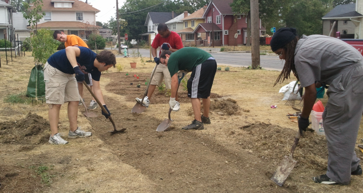
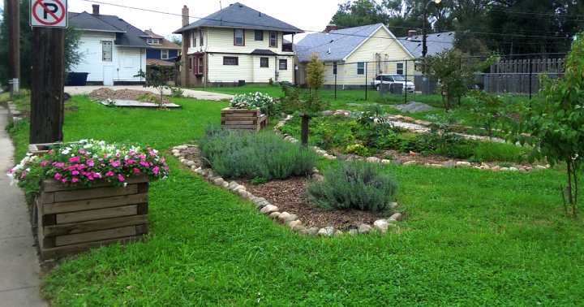
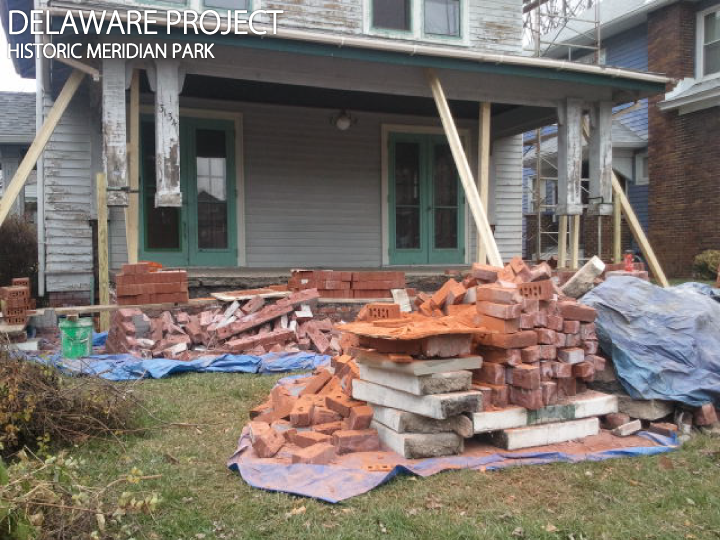
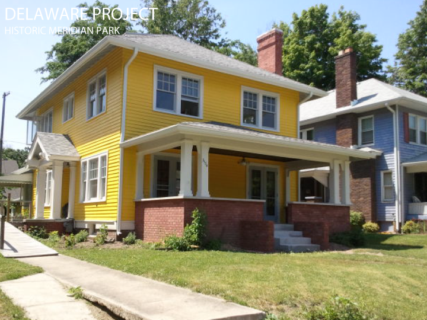
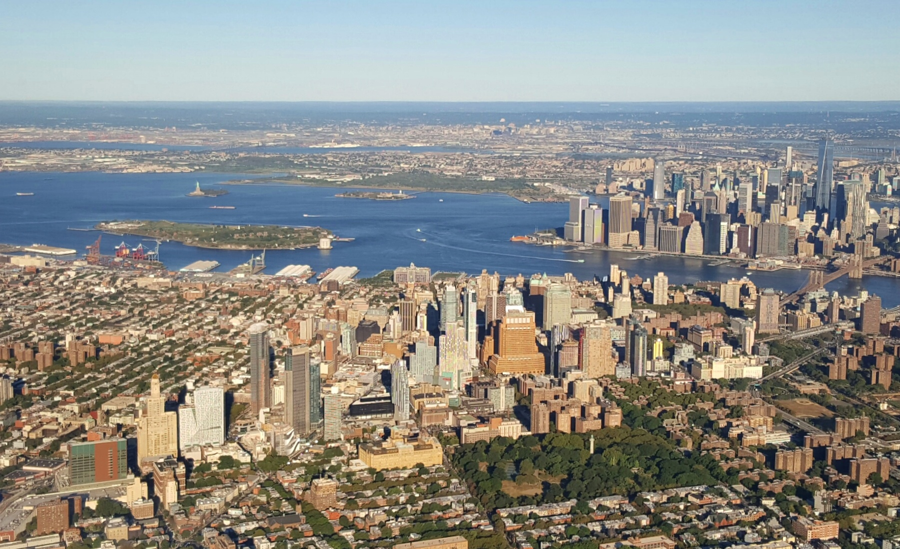

Short Bio
Justin Garrett Moore is an urban designer and the executive director of the NYC Public Design Commission. He has extensive experience in urban planning and design—from large-scale urban systems, policies, and projects to grassroots and community-based planning, design, and arts initiatives. At the Public Design Commission his work is focused on prioritizing quality and excellence for the public realm, and fostering accessibility, diversity, and inclusion in public buildings, spaces, and art. He is a member of the American Planning Association, the Urban Design Forum, Next City’s Vanguard, Columbia University GSAPP's adjunct faculty, and a co-founder of Urban Patch.
Interview with Justin
I was born and raised in Indianapolis, and am the youngest of three boys. The term has become prevalent again, but we lived in the quintessential American "inner city" -- in a predominantly black and low- to moderate-income neighborhood on the city's north side. Our family was more middle class, and I remember my mom saying "we aren't going anywhere" when we'd ask why we couldn't just move out to the 'nicer' neighborhoods. While Indianapolis has a relatively diverse population, my world was a black world most of the time, and I went to predominantly black public schools. It seemed as though things became progressively worse during my coming-of-age years. There were increases in both crime and vacancy, and the quality of public institutions, services, and businesses declined. In 1995, what they called a 'mini-riot' broke out in my neighborhood as people in my community protested against police violence. During that time in my life, I remember being very aware of how 'broken' things were for black people and their communities.
How did you first get interested in design?
I was interested in design at a very early age. My older brother Jason and I used to draw (and design) cars when we were kids. And when I was bored in school--which was pretty common--I would draw maps of made-up buildings and cities. The way that I formally got into architecture and design was through an MWBE-initiated program back in my home city, Indianapolis. There was a program started by a construction management company owner, Jimmy Beard, where he asked that firms that had a major contract with the public school system had to take on (minority) summer interns. When I was a freshman in high school, my predominantly-black school was slated for a new gymnasium addition. So through the program, I was able to get a full-time summer internship at CSO Architects, the firm awarded the design contract. Over twenty years later, both of us from that summer internship placement still work in the design field.
.. 
Tell me about the work you've done?
I am an urban designer and the executive director of the New York City Public Design Commission. I have extensive experience in urban design and city planning—from large-scale urban systems, policies, and projects to grassroots and community-focused planning, design, and arts initiatives. At the Public Design Commission, my work is focused on prioritizing the quality and excellence of the public realm, and fostering accessibility, diversity, and inclusion in the City’s public buildings, spaces, and art.
My work is focused on prioritizing the quality and excellence of the public realm, and fostering accessibility, diversity, and inclusion in the City’s public buildings, spaces, and art.
Before my moving to the Design Commission I was a Senior Urban Designer for the NYC Department of City Planning where, for over a decade, I was responsible for conducting complex urban design plans and studies of the physical design and utilization of sites including infrastructure, public spaces, land use patterns and neighborhood character. My projects at the planning department included the Greenpoint and Williamsburg Waterfront, Hunter’s Point South, the Coney Island Plan and the Brooklyn Cultural District. I received degrees in both architecture and urban design from Columbia University’s GSAPP where I am now an Adjunct Associate Professor of Architecture, Planning, and Preservation.
I also am the co-founder of Urban Patch, a social enterprise based in Indianapolis that focuses on community revitalization and design in American inner cities. My professional affiliations include the American Institute of Certified Planners, the Urban Design Forum, and Next City’s Vanguard. I also serve as a board member for ioby.org, Mary Miss—City as Living Laboratory, and Made in Brownsville.
What are your proudest accomplishments of your career?
My proudest accomplishments take different forms. First is the incredibly satisfying feeling of going to a place that I helped to design and to see people use and enjoy it, and to know that my work has a real and lasting impact and value for people's lives. Whenever I fly into New York, I get a kick of being able to point to a part of it and say, "I designed that part of New York City." Second is more so in my role as an educator and "doer," and I am always very proud when a former student or even someone I don't even know writes or tells me that I have been a positive influence and encouraged them to do a project or pursue a career in design. Finally, moments of recognition are incredibly valuable, to have some "wind for the sails" to continue to push me to do more. I was honored to be recognized as one of the leaders and innovators at Barack Obama's White House South by South Lawn Festival last fall, and that entire experience was a highlight of my career and remains a point of pride.
 ... What have been your biggest struggles of your career?
Finding a workable balance has been incredibly challenging. My field of design, urban design, is by nature very interdisciplinary and scattered. It is not a clearly-defines path that there is a clear framework for how to progress and grow into your career and to make the most impact with one's work. It is always challenging to try and promote the interests that are often not a priority for people in one's field, or who are in decision-making power. It can be frustrating when you make a point to raise an issue or offer an idea that speaks to your values and interests, and you are either dismissed or challenged as not being relevant or important.
I think there needs to be more diversity and paths of entry and opportunity, i.e., education, business, decision-making, and leadership opportunities, for people from a broader variety of backgrounds.
What would you like to see changed about the design field?
I think there needs to be more diversity and paths of entry and opportunity, i.e., education, business, decision-making, and leadership opportunities, for people from a broader variety of backgrounds.
What are you working on right now, either for work or for yourself?
At the Public Design Commission, I'm working on promoting an improved design review process to increase the quality of design for new affordable housing developments in New York City as a part of the mayor's affordable housing plan. At Columbia Urban Design I am helping to develop the Hudson Valley Initiative, that looks at using design research and initiatives to improve places like Newburgh or Poughkeepsie in the Hudson Valley region just outside of New York City. And with Urban Patch, we are continuing to develop our affordable housing and community improvement projects, like the Indy Redbud Project tree planting initiative. I also have been working to promote the #BankBlack movement through the @bankblackusa campaign.
Where do you see yourself in 5 or 10 years? Do you think you'll stay in design?
I hope to continue my work in design and design education, but it is important to me to be able to do projects directly, and not become only a 'talker' that is not connected to doing real work in cities and communities. But I do want to have a leadership role in the design profession, but also as a design leader that can connect to other fields like policy and economic development, community development, and even the sciences and arts, that can have a significant impact on accomplishing improvements in the built environment. Finally, I have done some work in communities beyond my own, and think that my experience and skills can be valuable to other contexts nationally and globally.
Lastly, what advice would you give to folks from similar backgrounds who are in design or hoping to get into it?
Look for opportunities to connect with others who are interested in the fields, and people that you see that are doing work that you find valuable. It is also important to continually learn and do projects and to build your professional exposure and body/portfolio of work to grow your skills and voice as a designer.
Share on